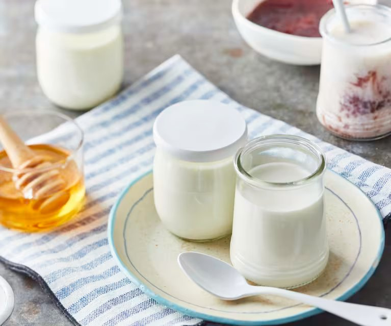

Yaourt nature au Varoma
Ingredients
8×
- 120 g de yaourt nature
- 800 g de lait entier
- 40 g de sucre
- 250 g d'eau
- 30 g de jus de citron

Préparation
Étape 1
Mélanger 120 g de yaourt nature, 800 g de lait entier et 40 g de sucre 30 sec/vitesse 4, puis chauffer Réchauffage/37ºC/vitesse 1.
Étape 2
Répartir dans 8 pots (120g), les fermer et les placer dans le Varoma.
Étape 3
Mettre 250 g d'eau et 30 g de jus de citron dans le bol, poser le Varoma et fermenter Fermentation/10 h/70ºC.
Étape 4
Laisser reposer 2h minimum au réfrigérateur.
Conseils
- Sans sucre, mélanger seulement 10 sec/vitesse 4.
- Utiliser du lait froid ou à température ambiante.
- Le jus de citron peut être remplacé par 1 cac d’acide ascorbique.
- Se conserve 8 jours au frais.